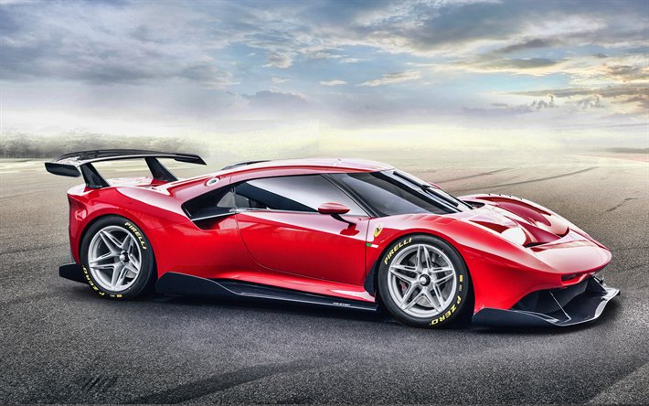

-

Pode-se dizer que a história do automóvel se divide entre antes e depois de 1913.
Foi nesse ano que Henry Ford inaugurou uma linha de montagem para produzir em massa seu Modelo T,
que tornou o automóvel pela primeira vez um sonho possível para um enorme mercado consumidor. -
Com velocidade máxima de 68 km/h, um peso de 725 kgs, o Model T está equipado com um motor.
Em linha de 4 cilindros atmosférico, a Gasolina. Este motor produz uma potência máxima
de 20 CV às 1800 rotações e um torque máximo de 113 Nm às 900 rotações.
A potência é transmitida à estrada através de um câmbio Manual de 2 marchas,
e o tipo de tração é traseira (RWD).
O DESING FOI MUDANDO E OS VEÍCULOS COMEÇARAM A FICAR MAIS ROBUSTOS COM MOTORES MAIS POTENTES
-
o V8 é composto por 8 cilindros, com 4 distribuídos em cada lado.
Ele é utilizado em diferentes tipos de carros e também pode ser adaptado para qualquer tipo de combustível. -
E começaram a surgir os câmbios automáticos, que é um sistema empregado em automóveis e motocicletas para troca de marchas realizada pelo sistema de transmissão do automóvel, que detecta a relação entre a velocidade (km/h) e a rotação do motor (rpm) para decidir pela troca automática da marcha. Desta forma, o sistema se propõe a manter a rotação do motor quase constante e o câmbio, automaticamente, faz a troca das marchas. Nos sistemas modernos com câmbio automático, a troca das marchas está quase imperceptível ao motorista.
-

Em 2014, a Ferrari foi classificada como a marca mais poderosa do mundo pela consultoria Brand Finance.
Em junho de 2018, o 250 GTO de 1964 tornou-se o carro mais caro da história
(em 2022 foi ultrapassado pela Mercedes-Benz 300 SLR Uhlenhaut Coupé,
sendo vendida por 143 milhões de dólares), estabelecendo um recorde de venda de 70 milhões de dólares - O FUTURO QUE PARECIA ESTAR LONGE, NÃO ESTÁ
TÃO LONGE ASSIM